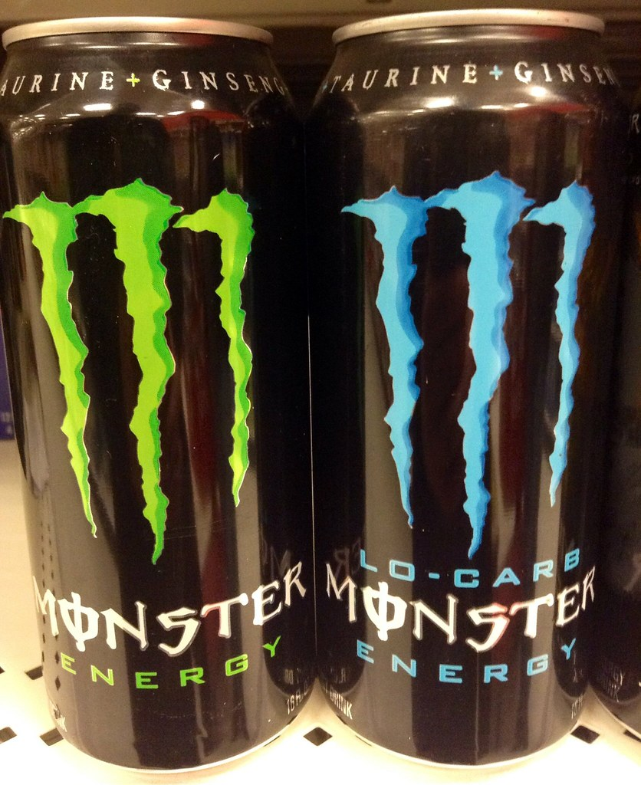

Fast food is generally considered unhealthy, especially for those who exercise regularly. Most fast food options are high in calories, unhealthy fats, and added sugars, and lack important nutrients that the body needs for exercise and recovery. Consuming fast food before or after exercise can lead to feelings of sluggishness and discomfort, making it harder to perform at your best. Fast food can also contribute to weight gain and other health issues over time, which can further hinder exercise performance and recovery. Overall, it's best to avoid fast food and opt for whole, nutrient-dense foods that can provide sustained energy and support overall health and fitness goals. If fast food is a regular part of your diet, try to limit consumption and choose healthier options such as salads, grilled options, and smaller portions.

Energy drinks are a popular choice for many individuals seeking a quick boost of energy, but they can be harmful when consumed before or during exercise. Energy drinks are typically high in caffeine, sugar, and other stimulants that can cause a rapid increase in heart rate and blood pressure, leading to feelings of nervousness, anxiety, and even heart palpitations. Additionally, the high sugar content in energy drinks can cause a spike in blood sugar levels, which can be followed by a crash, leaving you feeling tired and drained. This can negatively impact exercise performance and recovery, making it harder to achieve fitness goals. Overall, it's best to avoid energy drinks and instead opt for healthier sources of energy, such as whole foods and natural sources of caffeine such as coffee or tea. If you do choose to consume energy drinks, it's important to do so in moderation and avoid consuming them before or during exercise.